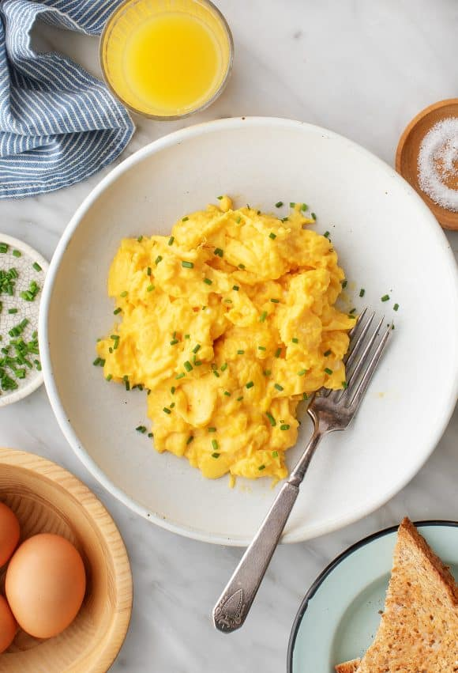

Eggs

Description
Eggs is the ultimate convenience food. I would often cook eggs along with rice growing up as a makeshift meal when I had nothing in the house. Eggs are nutritious packed with protein and a combination of 18 different vitamins and minerals. There are numerous ways to cook eggs, but I like cooking scrambled eggs the most. You can find eggs at any grocery stores.
Ingredients
Serves 1-2 people
- 3 Large eggs
- Milk (alternatively, plant milk, or water)
- Extra-virgin olive oil or butter
- Salt
- Pepper
- Chopped fresh chives, optional, for garnish
Equipment
- Medium bowl
- Small nonstick skillet
- Rubber spatula
- Balloon whisk
Steps
- Crack the eggs into a medium bowl and add the milk or water. Whisk until smooth and combined, with no streaks of egg white remaining.
- Brush a small nonstick skillet with olive oil, or melt a little butter in a small nonstick skillet. Bring to medium heat.
- Pour in the eggs, and let them cook for a few seconds without stirring. Pull a rubber spatula across the bottom of the pan to form large, soft curds of scrambled eggs.
- Continue cooking over the medium-low heat, folding and stirring the eggs every few seconds. Scrape the spatula along the bottom and sides of the pan often to form more curds and to prevent any part of the eggs from drying out.
- Remove the pan from the heat when the eggs are mostly set, but a little liquid egg remains. Season to taste with salt and pepper and garnish with chopped fresh chives, if desired.
Here's a link to go back to the three recipe page
Home